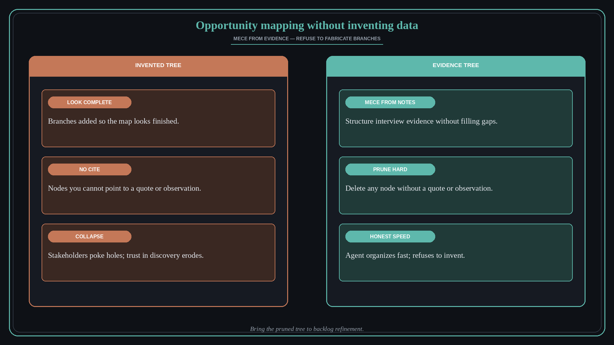

Opportunity mapping without inventing data
Source: George / prodmgmt.world (@nurijanian)
original post
What it claims
Feels like Teresa Torres debating in your back pocket — continuous discovery habits and opportunity mapping, straight from the canon. An agent with a /mece-tree skill works best on solid interview data, and can also shape a messy dataset without inventing anything that isn’t there.
Why it matters for a PO
Opportunity solution trees collapse when POs invent branches to look complete. An agent that structures interview evidence into MECE opportunities — and refuses to fabricate — keeps discovery honest under speed pressure.
3 takeaways
- Opportunity maps are only as honest as the evidence behind each node.
- MECE structure helps; fabricated completeness hurts — delete anything you cannot cite.
- Agent + interview notes can organize fast without filling gaps with fiction.
Practice this week
Drop notes from 3 recent customer or stakeholder conversations into an opportunity map. Force MECE; delete any node you cannot point to a quote or observation for. Bring the pruned tree to backlog refinement.